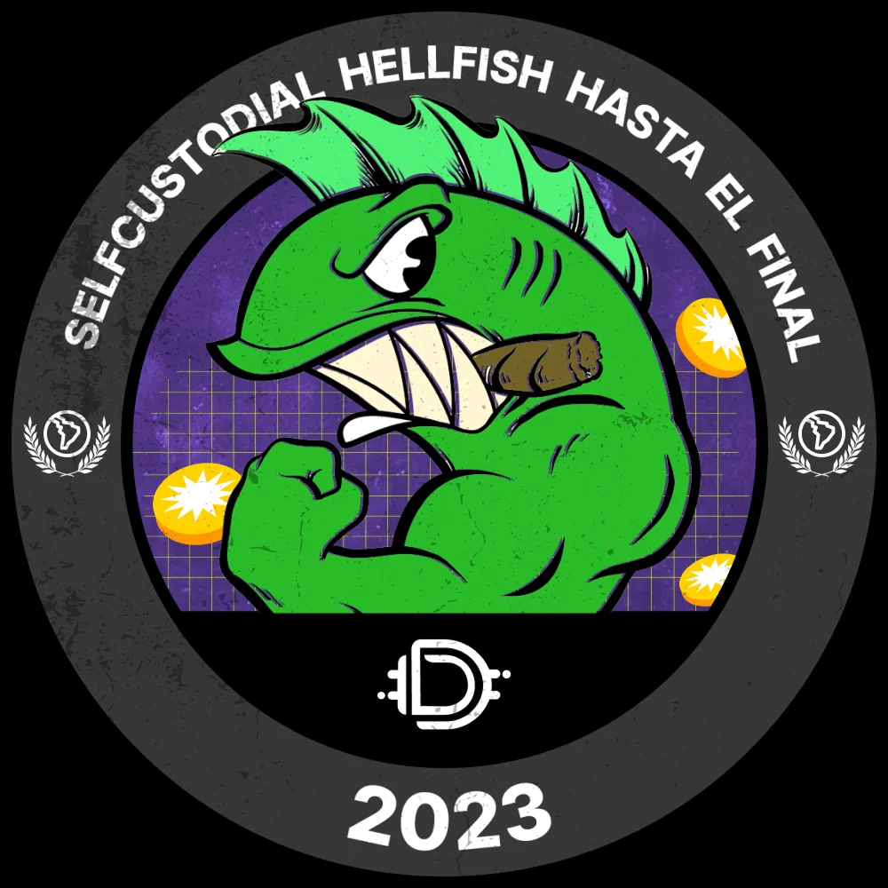
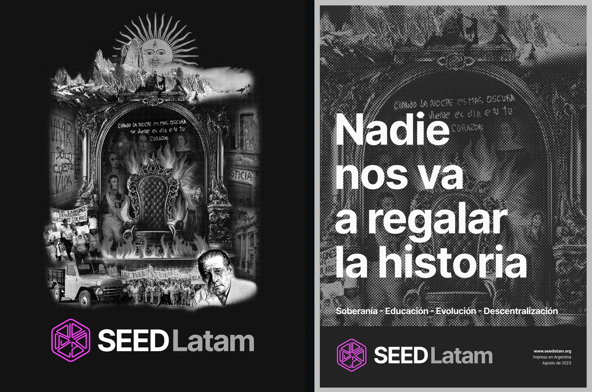
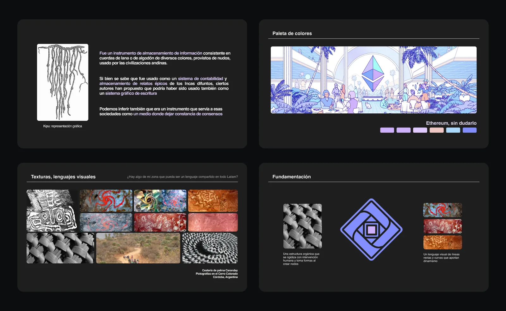
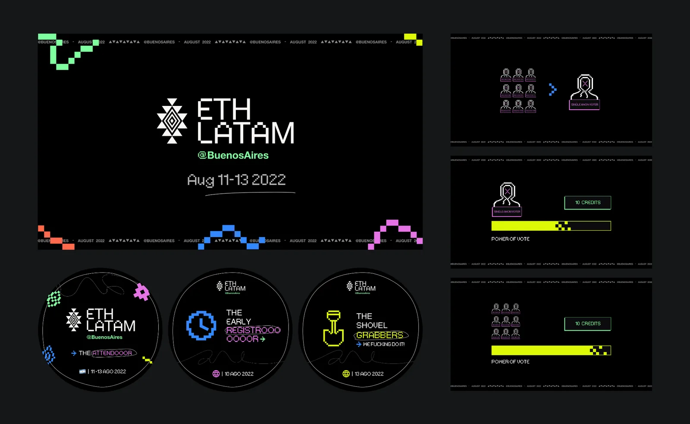
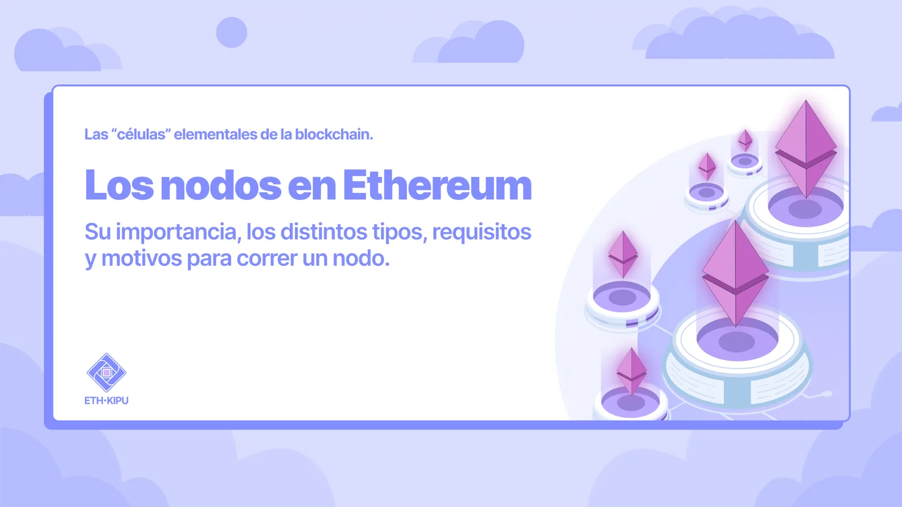
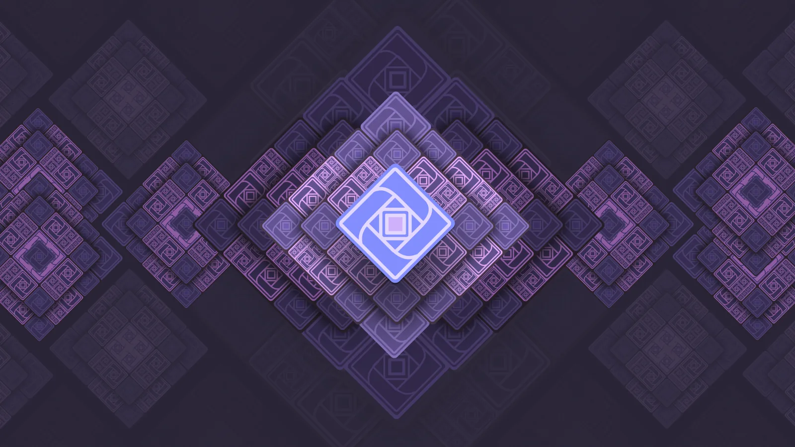

Acá en Córdoba me dicen El Loco Pacha desde que tengo unos 13, 14 años, pero me llamo Franco Zuppone.
De chiquito no me bautizaron. Pero mi vieja me enseñó a rezar igual, por las dudas. Un día me encontró, a los cinco años, rezando con los ojos cerrados. Cuando me preguntó qué le estaba pidiendo a Dios, le dije que le estaba pidiendo que me enseñe a hacer willy con la bici.
El ciclismo me acompaña desde siempre. Fue lo que me ayudó a salir de un episodio de burn-out, fue el culpable de que hoy tenga las dos clavículas de titanio y llenas de tornillos, y es también lo que entreno y hago todos los fines de semana en la montaña.
Durante varios años trabajé en Ethereum. Pasé por proyectos muy distintos entre sí, aportando soluciones de diseño y producto en Buenbit, Defiant, DeFi Latam / SEED Latam, ETH Kipu y ETH Latam.
Antes de Ethereum también hubo bastante. Estudié Diseño Industrial en la hermosa Universidad Nacional de Córdoba. Tuve una marca de indumentaria urbana que vendí en su mejor momento, cosa que recomiendo. Tuve un estudio de diseño. Hice freelance durante años: identidad visual, editorial, señalética, indumentaria, packaging, de todo.
En tiempos de carrera desenfrenada por ver quién postea la solución más mágica del último agente para el último problema que aún no se inventó, hoy me paro acá para contarte algunas cosas que fui aprendiendo en estos años. Cosas que se me fueron acomodando con el tiempo, y que tienen más que ver con cómo se trabaja, y con quiénes, que con qué se construye.
Las cuatro esquinas
Una cosa que recién ahora, escribiendo esto, terminé de ver con claridad es que en estos años me moví en dos grandes ámbitos del ecosistema Ethereum.
Por un lado, el ámbito privado: startups, empresas, corpos. Por otro, el ámbito comunitario y de public goods: comunidades, fundaciones, grantees de la Ethereum Foundation, proyectos que muchas veces existen antes como movimiento que como estructura formal.
Y dentro de cada ámbito trabajé en experiencias bastante distintas: desde lo más institucional y formal hasta lo más informal, radical o cypherpunk, si se quiere.
Las dos trayectorias se cruzan en el medio y forman una X. Cuatro esquinas. Como el diamante de Ethereum, si se me permite el guiño.
La diferencia más profunda entre esas esquinas no es solo el modelo de negocio ni la estructura legal. Es para qué diseñás.
En el ámbito privado diseñás para que una empresa entregue valor al segmento de mercado que captura. En el ámbito comunitario y de public goods diseñás para que un movimiento, un proyecto o una comunidad exista, se entienda, se reconozca y pueda convocar a otros.
Son oficios distintos dentro del mismo oficio. Pero hay algo que el trabajo en ambos ámbitos tuvo en común para mí: el diseño de productos no es arte. Es una herramienta de resolución de problemas.
Buenbit: donde me recibí de Product Designer
A Buenbit me recomendó Romina Sejas, de ahora en adelante La Romi. A La Romi le voy a estar agradecido toda la vida porque básicamente junto a ella empecé y construí mi carrera en cripto.
Yo ya venía experimentando de modo autodidacta con Bitcoin, Ethereum y DeFi, así también como con NFTs en aquella época. Ellos estaban empezando a crecer, abrieron una postulación y quedé.
La entrevista para entrar la hice con Paloma, del departamento que en Buenbit se llamaba People. Algo que capaz nunca supo ella es que esa fue la primera entrevista laboral de mi vida. También fue la primera persona, de muchas, que no me preguntó de qué me había recibido. Solo se encargó de saber que yo sabía hacer lo que decía que sabía hacer.
Buenbit era un CEX y fue uno de los precursores de DAI en Argentina, del que yo ya era usuario mucho antes de entrar a trabajar ahí. En contexto: estábamos en una época donde la inflación era brutal y comprar dólares estaba virtualmente prohibido. Buenbit fue una gran solución para muchísima gente que no tenía cómo proteger sus ahorros. Un problema real, urgente, masivo. De libro de texto.
Yo arranqué haciendo diseño gráfico. En ese momento Buenbit estaba por lanzar su app nativa y para eso crearon el área de UX, con Maxi Catani a la cabeza, que junto con Maxi Passarelli me enseñaron el oficio: cómo pensar un producto, cómo defender una decisión de diseño con datos pero también con criterio, cómo trabajar con devs, cómo no enamorarte de tus propias soluciones, cómo leer métricas. Realmente fue mi facultad de UX.
Yo era el único diseñador del equipo que tenía background real en cripto. Cripto salvaje, digo. De manejarte tu propia wallet, de configurarte el RPC, de haber perdido plata por hacer una transacción mal y de aprender a la fuerza.
Yo aprendí de ellos a diseñar productos. Ellos, a través mío, entendieron mejor el mundo para el que estaban diseñando. Y entre todos, sin proponérnoslo, fue brotando una cultura de equipo que después extrañaría siempre.
El final de Buenbit es historia bastante conocida. Fue el primer layoff grande del ecosistema cripto argentino en el bear market de 2022. Maxi Catani, como buen capitán, armó una lista con los nombres de todo su equipo para circularla por LinkedIn. Al lado de mi nombre leí claramente el título “Ssr. Product Designer”, y ahí entendí que me había egresado.
Defiant: desaprender la UX como la conocía
De Buenbit pasé a Defiant. A algunos del equipo ya los conocía de la comunidad de DeFi Latam, así que nuestra relación empezó por ahí. Si Buenbit fue donde aprendí el oficio, Defiant fue donde entendí lo que era trabajar con un equipo que jugaba en la liga que a uno le gusta jugar.
Defiant era una wallet self-custodial. Si Buenbit era una especie de cripto-neo-banco, Defiant era todo lo opuesto. Era absolutamente punk, en el mejor sentido de la palabra. Hacíamos las cosas porque creíamos en hacerlas, no porque estuvieran en un roadmap firmado por alguien arriba.

Nos encolumnábamos tras el concepto de self-custodial no tanto como feature, sino porque realmente creíamos que si hacíamos lo que pensábamos, Defiant y sus usuarios iban a triunfar. Una wallet custodial te guarda las llaves; una self-custodial te dice: las llaves son tuyas, hacete cargo, esto es lo que cripto vino a hacer.
Diseñar dentro de una wallet self-custodial es un oficio raro, casi contraintuitivo respecto a lo que te enseñan en cualquier curso de UX. La regla de oro de la UX moderna es reducir barreras, esconder complejidad, que el usuario no tenga que pensar. En una self-custodial muchas veces tenés que hacer exactamente lo contrario: tenés que diseñar para que el usuario sí piense, para que entienda qué está por hacer, para que sepa que del otro lado de ese botón no hay un equipo de soporte que le va a revertir la operación si se equivoca.
Tenés que diseñar para que la gente entienda que después de cierto punto no hay vuelta atrás, y que eso no es un bug del producto: es el producto. Así es blockchain.
Otro problema real, distinto al de Buenbit pero igual de concreto: cómo ayudar a la gente a hacerse cargo de su propia plata sin convertir la app en un laberinto.
El equipo siempre se mantuvo chico en cantidad pero enorme en calidad. Acá quiero nombrar especialmente a Bruno e Iván, CEO y CTO. Mi crecimiento profesional y personal ahí fue exponencial, y no es una palabra que use livianamente.
Ahí también, sin manuales de marca ni offsites de team building, brotó una cultura. La de un grupo chico que creía en lo mismo.
DeFi Latam / SEED Latam: la banda de rock independiente
DeFi Latam fue mi primera experiencia diseñando para algo que no era una empresa: era una comunidad digital. Yo formaba parte activa de la comunidad como aprendiz y aportante desde aproximadamente el año 2020. 2019 había sido para aprender de Bitcoin y Ethereum, y en 2020 el paso natural era DeFi.
Fue la primera vez que diseñé dentro de una estructura que no tenía forma de startup, no tenía forma de DAO, no tenía forma de empresa, no tenía forma de ONG. Tenía un poco de cada una y a la vez ninguna. Para mí siempre fue lo más parecido a una banda de rock independiente en lo que laburé. Y cuando digo banda de rock independiente no me refiero a una banda indie palermitana con hipoglucemia. Me refiero a Los Redondos.
Si en algún lugar fue evidente que la cultura no se fabrica, fue acá: nadie había pedido permiso para que existiera, y existía.
En un momento, dados los cambios en el ecosistema, decidimos que necesitábamos un rebranding. Y fue ahí donde por primera vez mis diseños tenían un mensaje expresa y abiertamente político. Hablábamos directamente de ethos e ideales políticos que creíamos que tenían que ser la guía para afrontar aquella web3 incipiente, con una visión fuertemente basada en los creadores y usuarios latinoamericanos de cripto.
El nombre con el que presenté el rebranding fue BUIDLERS. Gustó, pero convenció poco. Hasta que en un momento el amigo Jean propuso SEED. No solo por la evidente relación con una seed phrase: era una sigla que condensaba los conceptos que veníamos tratando de poner en agenda. Soberanía, Educación, Evolución, Descentralización.
Hay una pieza específica que para mí ancló todo el contenido político de aquel momento. Un collage. Adentro había un trono prendido fuego, frases de Los Redondos grafiteadas, la cara de Favaloro, fotos de los ahorristas estafados en el quilombo del 2001 acá en Argentina, grafitis de Cromañón.

En aquella época SEED Latam andaba mucho por los foros de gobernanza de protocolos y de L2s, y yo quise instalar una idea que me parecía importante: la calle y los grafitis fueron los primeros foros de gobernanza en los que estuvimos metidos todos los humanos, aunque no nos hayamos dado cuenta. Mucho antes de que existiera Snapshot, mucho antes de que existiera un quorum on-chain, la gente ya votaba con aerosol sobre la pared.
El problema acá no era de una app. Era cómo hacer que un ecosistema entienda de dónde viene y para qué.
De SEED me voy porque a esa altura estaba experimentando un serio burn-out, y yo ya no coincidía con los nuevos ideales y visiones de producto que planteaban para el futuro inmediato las personas que quedaron a cargo del proyecto.
ETH Kipu y ETH Latam: cuando el mensaje político se institucionaliza
De SEED pasé a ETH Kipu. Acá hay que contar bien el orden de las cosas, porque es contraintuitivo: ETH Latam nació primero. Era el evento sobre Ethereum más grande de Latinoamérica. Y a raíz del éxito de la primera edición de ETH Latam en Buenos Aires, y con la Ethereum Foundation alucinada con todo lo que habíamos logrado desde Latinoamérica, se decidió crear ETH Kipu. O sea, el hijo nació antes que la madre. Cosas de cripto.
En ETH Kipu fue donde el mensaje político tomó otra forma. Ahora teníamos que mostrar que estábamos alineados con algo más grande que nosotros, y que a su vez los seres humanos eran los protagonistas del producto. Eso cambia mucho el laburo de diseño. No te quita lo político, pero te obliga a articularlo con más capas y en otro registro.

ETH Latam fue otra bestia. Cada edición era un país distinto, un concepto distinto: Buenos Aires, Bogotá, San Pedro Sula, San Pablo. Diseñar para cuatro países distintos te obliga a ponerte en la piel de cuatro culturas distintas. Y es un recordatorio constante de la primera tesis: la cultura no se inventa desde afuera, hay que ir a buscarla donde está.

Yo tenía la convicción muy clara de que necesitaba de la gente de cada país para que me avalen y para que hagan curaduría de mis ideas. Sacando el evento de Argentina, siempre en la previa de la creación del branding de cada edición era obligatorio para mí ponerme en contacto con los locales, invitarlos al proceso, que me cuenten historias, que me conviden de la cultura. ¿Qué gaseosas toman los tacheros?, solía preguntar yo. Quería tratar de condensar un poquito el alma de cada país en cada edición.
Para mi último año dentro de ETH Kipu, co-creé con Ludmi, la Kipu Explorer, dos proyectos grandes. Uno de ellos fue rebrandear Kipu hacia una experiencia más madura y más actualizada a la realidad del ecosistema y del propio producto, que ya tenía que sentarse a charlar mano a mano con gobiernos, ministerios y rectorados de universidades públicas.

También presentamos un proyecto que yo venía empezando a delinear un año antes. En noviembre de 2024, mientras ETH Kipu tenía su nave insignia llamada Ethereum Developer Pack, que enseñaba a devs no cripto a programar en Solidity para Ethereum, yo propuse dejar asentado que lo que venía para el futuro era otra cosa: el Ethereum Product Pack.
La idea era educar a personas para que aprendan a pensar, desarrollar y ejecutar productos relacionados a Ethereum y a IA, porque ya era visible que la generación de código, en su gran mayoría, no iba a pasar tanto por los humanos. Si los devs son cada vez más asistidos por modelos, lo escaso pasa a ser otra cosa: criterio de producto, visión, decisiones, ética del diseño del producto.
Me fui de Kipu dejando esa propuesta asentada. Para mí, ese es el legado del que más orgulloso me siento.

Sacando en limpio algunas ideas
Durante estos años me moví entre cuatro esquinas bastante distintas de Ethereum. En el ámbito privado, pasé del CEX con sueño corporativo a la wallet self-custodial más punk. De diseñar para una empresa que custodiaba la plata de la gente y abstraía al usuario de la mayor cantidad de riesgo posible, a diseñar para una empresa que enseñaba a la gente a no necesitar que nadie le custodie la plata.
En el ámbito comunitario y de public goods hice el recorrido inverso: empecé en lo más radical, una comunidad autoconvocada haciendo collages políticos, y terminé en lo más institucional, una Fundación alineada con la Ethereum Foundation organizando el evento itinerante más grande del ecosistema cripto en la región.
Los dos recorridos fueron distintos. Los dos fueron necesarios. Y los dos me mostraron algo parecido: no hay una sola manera de diseñar en Ethereum. Hay problemas distintos, culturas distintas y grados distintos de institucionalidad. Pero el oficio, en el fondo, sigue siendo el mismo: entender para qué estás diseñando, para quién, con quién y qué tipo de mundo estás ayudando a poner en práctica.
El diseño de productos no es arte. Es una herramienta de resolución de problemas. A veces se resuelve con una app, como en Buenbit o Defiant. A veces con un POAP, una pieza para un foro de gobernanza o un collage político, como en SEED. A veces con la identidad visual de un evento que recorre cuatro países, como ETH Latam. A veces con una propuesta de programa educativo, como el Ethereum Product Pack.
Pero esa idea sola se queda corta.
Porque si el diseño fuera solamente resolución de problemas, alcanzaría con encontrar la solución más eficiente, implementarla y pasar a otra cosa. Y estos años me mostraron que no alcanza. En Ethereum, y probablemente en cualquier lugar donde haya personas tratando de construir algo que dure más que una campaña, el problema nunca es solamente técnico. También es cultural.
Importa qué problema elegís resolver. Importa para quién lo resolvés. Importa con quién lo resolvés. Importa qué tipo de autonomía habilitás, qué tipo de comunidad convocás, qué tipo de confianza construís y qué tipo de mundo, aunque sea chiquito, ayudás a imaginar.
Por eso para mí el diseño también es un vector de creación de cultura. Uno no puede falsear o fingir una cultura de la que no es parte. Quizás durante un tiempo algunos pueden, pero tarde o temprano la conexión empieza a fallar y se le empiezan a ver los hilos a las cosas.
La cultura se va formando día a día entre las personas, mientras estás resolviendo otros problemas. Se cuela, brota. Aparece cuando hacés bien tu laburo y estás en comunión con tus compañeros, no cuando intentás hacerla aparecer a la fuerza.
Si estás resolviendo un problema real, para una organización que cree en algo, con un equipo que cree en algo, la cultura aparece sola. Si estás resolviendo un problema inventado para una organización que no cree en nada, podés meterle todos los manuales de marca que quieras y una UI perfecta, pero no va a aparecer cultura por ningún lado.
Lo que viene
Hace unos meses, después de irme de Kipu, me tomé un descanso profesional. Bastante merecido, creo. Y ahora estoy arrancando una etapa nueva: voy a empezar a construir algunos MVPs relacionados al ciclismo. Por algo este artículo empezó hablando de eso.
No lo vivo como un abandono de lo anterior, sino como un movimiento natural después de varios años de aprendizaje intenso. Ethereum me enseñó mucho más que una tecnología. Me enseñó una forma de mirar los problemas: buscar dónde hay una necesidad real, entender qué tipo de autonomía puede habilitar una herramienta, trabajar cerca de la gente que va a usarla, y no separar nunca producto, cultura y comunidad como si fueran mundos distintos.
Ahora quiero llevar esa forma de mirar a otro ámbito que me acompaña desde antes de saber cómo nombrarlo. El ciclismo tiene cuerpo, territorio, riesgo, comunidad, códigos, objetos, mapas, rutas, talleres, entrenamiento, frustraciones, pequeñas victorias y una cultura propia que tampoco se puede fabricar desde afuera. Hay que estar ahí. Hay que pedalearla.
Sigo siendo un convencido del potencial que tienen Ethereum y la tecnología blockchain para transformar realidades concretas cuando se aplican sobre problemas reales. Buenbit supo ser una solución para una época donde la inflación era brutal y el dólar estaba prohibido. Defiant era una gran solución para una época donde había que enseñar que las llaves de tu plata podían ser tuyas. SEED y Kipu eran movimientos donde había que pelear por educación abierta y gratuita.
Diseñé para todas esas cosas porque donde más cómodo me siento es trabajando para cosas en las que creo y me apasionan.
Por eso siento que ahora me toca el ciclismo. No porque sea más importante que cripto, ni porque lo anterior haya dejado de importarme, sino porque es algo que me acompaña hace toda la vida y que considero importante para los humanos. Y porque tal vez, más adelante, algunas de las cosas que aprendí en Ethereum encuentren ahí una forma nueva. No necesito spoilear nada todavía.
Esa es mi motivación política para diseñar: ir adonde están las cosas en las que creo, y diseñar ahí.
Si la cultura aparece, aparece. Y si no, por lo menos voy a haber tratado de resolver algunos problemas.
Si me querés escribir, estoy en todos lados como Loco Pacha, aunque esta vez firmo como Franco.